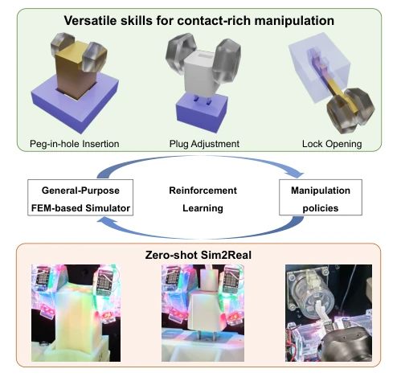
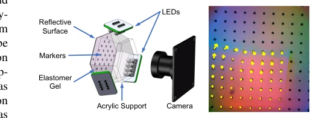
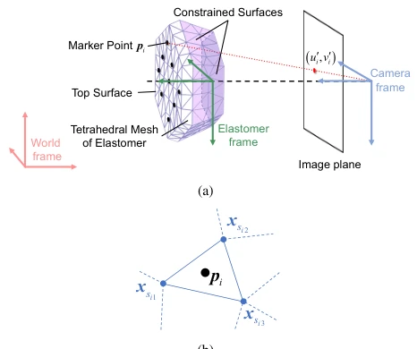
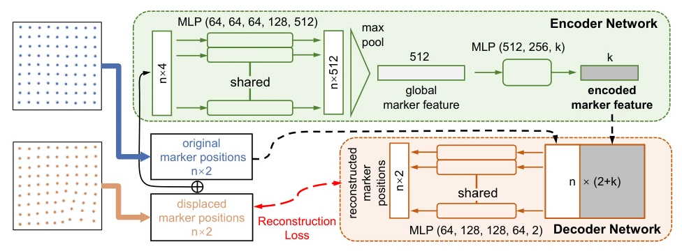
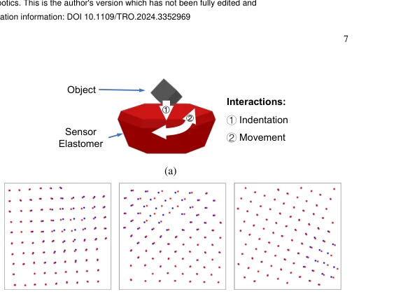
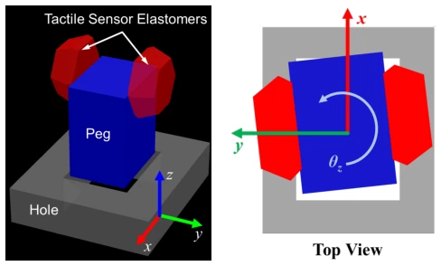
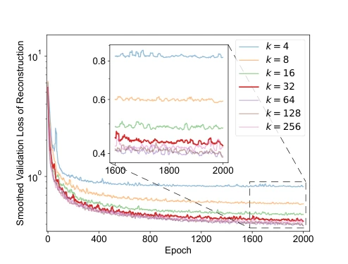
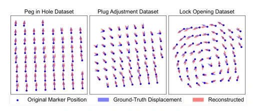
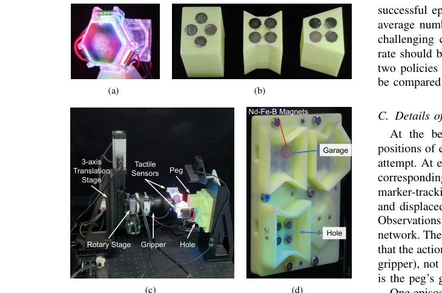
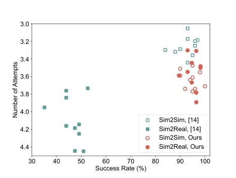

This paper attempts to use FEM to address the long-standing and difficult problem of tactile Sim2Real, serving as a potent remedy for the rigid body simulation community. The authors did not blindly stack Transformers but returned to physical fundamentals, using IPC to simulate elastic deformation, which is commendable. However, reliance on Marker-based sensors limits generalizability, as not all robots possess such "spiked" fingertips. Although FEM is accurate, computational overhead remains a concern in RL training; although they claim a two-fold speedup, it remains distant from real-time interaction. Furthermore, while self-supervised pre-training aids generalization to unseen tasks, it essentially remains an RL paradigm of "changing the soup but not the medicine," merely employing a smarter feature extractor. Overall, it is a solid engineering protocol, yet far from "general," given that interlocking holes come in various models, where does a universal key come from?
Tactile perception is crucial in contact-rich tasks, yet existing Sim2Real methods are predominantly based on rigid body physics simulation [10], [12], [14], failing to accurately simulate elastic deformation, resulting in a significant Sim2Real gap. Additionally, tactile signals are high-dimensional and unordered; traditional CNNs process images inefficiently and struggle to capture contact details. Existing work [14] is fast but simplifies physical models, making it difficult to handle complex contacts. This paper aims to construct a general protocol to address inaccurate elastic deformation simulation and low feature extraction efficiency, thereby enhancing the zero-shot transfer capability of RL policies in the real world.
The overall pipeline encompasses FEM simulation, tactile feature extraction, self-supervised pre-training, and RL policy learning. First, an IPC-based FEM physics engine is employed to simulate elastic deformation, with robot actions simulated via boundary condition constraints to ensure accurate contact force fields. Second, a PointNet-based point cloud feature extraction network is proposed to directly process Marker pixel coordinate sets, avoiding redundancy in image processing. Next, a self-supervised Autoencoder pre-training is designed to extract low-dimensional task-agnostic features from extensive simulation data, improving sample efficiency. Finally, RL training is conducted combining the TD3 algorithm, incorporating domain randomization techniques across physical, optical, and task domains to narrow the Sim2Real gap.
Validation was performed on peg-in-hole (monotonic insertion), plug adjustment, and lock opening tasks. The comparison baseline is [14]. 400K pairs of simulation data were used to pretrain the Autoencoder, with reconstruction loss less than 1 on unseen tasks, demonstrating generalization. In real-world experiments, the monotonic insertion task achieved higher success rates with fewer attempts. Fig. 11 shows that compared to the method in [14], the Sim2Real gap in this paper is smaller. Ablation studies indicate that domain randomization and pre-training are crucial for improving performance.
其他图片Other Figures

Fig. 1. In this work, we build a general-purpose Sim2Real protocol for marker-based visuotactile sensors, which includes FEM-based physics sim- ulation, policy learning architectures, self-supervised representation learning, and domain randomization techniques. We demonstrate its effectiveness for zero-shot Sim2Real for three high-precision contact-rich manipulation tasks.

Fig. 2. (a) The schematic of the marker-based visuotactile sensor used in our work, which is based on GelSight [25]; (b) One example of real tactile image with marker tracking. The marker flow in contact area is shown by yellow arrows.

Fig. 3. (a) In our tactile sensor, the markers are distributed on the top surface. The surfaces in purple are constrained by the shell. The elastomer frame is fixed on the constrained surfaces of the elastomer. After transforming the marker point into the camera frame, one can calculate its pixel coordinate using the pinhole model. (b) Illustration of interpolation using adjacent FEM vertices. pi denotes the ith marker, and the facet it belongs to has 3 vertices: xsi1, xsi2 and xsi3.

Fig. 4. Overview of the autoencoder structure. To deal with marker permutations and loss of tracking, the PointNet [43] structure is utilized. The encoder takes in concatenated marker positions as input and extracts the k-dim marker flow feature. To reconstruct the deformed marker position, the decoder concatenates the original marker positions with the k-dim feature, and outputs the reconstructed marker positions.

Fig. 6. Data collection of the proposed tactile autoencoder. (a) The simulation scene for collecting autoencoder pre-training data. (b) Some samples of the collected marker flow training data. Markers in red are the displaced ones.

Fig. 9. (a) Our simulation environment of the peg-in-hole insertion task. Visualization is realized by SAPIEN [46]. (b) Top view of the task. The initial pose error has 3 degrees of freedom.

Fig. 7. Reconstruction loss in validation during autoencoder training, where the latent feature has different dimensions. The loss is in log scale and is smoothed using 10-element moving-average. k = 32 is chosen as the latent feature dimension because it has both compactness and sufficient representative capability.

Fig. 8. Visual comparison between the ground-truth and reconstructed marker displacements in different datasets. The datasets are collected from the replay buffers in RL training. The arrows representing the displacements are 2× scaled.

Fig. 10. The devices for the peg-in-hole experiment. (a) Our self-made GelSight-type tactile sensor. (b) These 3 shapes, namely Cuboid, Concave and Trapezoid, are used to test the trained policy in reality. The magnets are used for pose resetting. (c) We use a combined motorized stage and a parallel gripper to execute the tasks. (d) The mechanism for auto-resetting the pose. The garage has large chamfers to tolerate possible peg pose errors. There are also magnets at the bottom of the garage for pose resetting.

Fig. 11. Distribution of all the Sim2Sim and Sim2Real results of our method and [14]’s method on the monotone peg-in-hole insertion task. The metrics are the success rate (higher is better) and the number of attempts (lower is better). Our method has a higher success rate and a smaller Sim2Real gap.